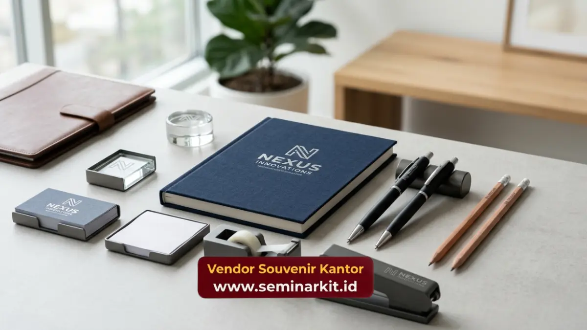

Jenis produk souvenir supplier untuk kebutuhan korporat mencakup alat tulis, peralatan minum, tas custom, merchandise elektronik, hingga hampers eksklusif yang dapat disesuaikan dengan identitas brand perusahaan. Setiap kategori memiliki fungsi dan kesan yang berbeda tergantung tujuan penggunaannya.
- Alat tulis dan peralatan minum menjadi kategori produk paling banyak digunakan untuk merchandise operasional
- Tas custom cocok untuk kebutuhan seminar, konferensi, dan onboarding karyawan baru
- Merchandise elektronik memberikan kesan modern dan fungsional bagi penerima
- Hampers eksklusif ideal untuk momen apresiasi klien dan karyawan di akhir tahun
- Setiap produk dapat dipersonalisasi dengan logo perusahaan melalui berbagai teknik cetak
Perusahaan yang aktif menyelenggarakan acara korporat, seperti seminar, gathering, atau program penghargaan, umumnya membutuhkan variasi produk merchandise yang sesuai dengan konteks acara tersebut.
Memahami kategori produk yang tersedia membantu tim procurement menentukan pilihan yang paling relevan dengan tujuan dan anggaran yang dimiliki.
Alat Tulis dan Peralatan Kantor Custom
Alat tulis kantor custom seperti notebook, pulpen, dan organizer meja menjadi salah satu kategori produk yang paling sering dipilih karena fungsinya yang praktis dan digunakan sehari-hari oleh karyawan maupun klien.
Produk kategori ini umumnya memiliki biaya produksi yang relatif terjangkau dibandingkan kategori lain. Notebook custom dengan logo perusahaan sering digunakan sebagai merchandise standar untuk seminar maupun rapat internal. Pulpen dengan cetak logo juga menjadi pilihan populer karena dapat diproduksi dalam jumlah besar dengan biaya efisien.
Selain itu, organizer meja dan sticky notes custom kerap digunakan sebagai pelengkap paket merchandise di acara-acara korporat berskala menengah. Keunggulan kategori alat tulis adalah fleksibilitasnya, karena dapat digunakan untuk berbagai jenis acara mulai dari pelatihan internal hingga kunjungan mitra bisnis, sehingga menjadikannya pilihan yang cukup fleksibel bagi banyak perusahaan.
Peralatan Minum dan Tumbler Korporat
Peralatan minum seperti tumbler dan botol minum custom menjadi kategori produk yang semakin diminati karena dianggap praktis, ramah lingkungan, dan digunakan secara berulang oleh penerimanya sehingga logo perusahaan lebih sering terlihat.
Tumbler stainless steel dengan cetak logo laser umumnya memberikan kesan lebih premium dibandingkan tumbler plastik biasa. Produk ini kerap digunakan sebagai merchandise untuk karyawan baru, hadiah loyalitas klien, maupun goodie bag acara seminar dan workshop korporat.
Selain fungsinya sebagai media branding, tumbler custom juga mendukung inisiatif keberlanjutan perusahaan karena dapat mengurangi penggunaan botol plastik sekali pakai di lingkungan kerja maupun acara korporat.
Tas Custom untuk Kebutuhan Acara Korporat
Tas custom seperti totebag, ransel, dan tas laptop banyak digunakan untuk kebutuhan seminar, konferensi, dan program onboarding karyawan baru karena fungsinya yang praktis untuk membawa dokumen maupun perlengkapan kerja.
Totebag kanvas dengan cetak logo sering menjadi pilihan untuk acara berskala besar karena biaya produksinya yang relatif efisien dan tampilannya yang fleksibel untuk berbagai kebutuhan. Sementara itu, tas laptop dan ransel custom dengan bahan yang lebih premium umumnya digunakan sebagai merchandise eksklusif untuk klien atau jajaran manajemen.
Pemilihan bahan dan desain tas turut memengaruhi kesan yang ingin disampaikan, misalnya bahan kanvas untuk kesan kasual dan fungsional, atau bahan kulit sintetis untuk kesan lebih formal dan eksklusif.
Merchandise Elektronik sebagai Pilihan Modern
Merchandise elektronik seperti power bank dan flashdisk custom menjadi pilihan yang semakin populer karena dianggap relevan dengan kebutuhan kerja masa kini serta memberikan kesan modern bagi penerimanya.
Power bank custom logo sering dipilih sebagai merchandise premium untuk klien maupun mitra bisnis karena fungsinya yang praktis dan bernilai guna tinggi. Flashdisk custom juga masih banyak digunakan sebagai merchandise pelengkap dalam paket seminar atau pelatihan korporat, terutama untuk menyimpan materi presentasi.
Kategori produk elektronik umumnya membutuhkan proses produksi tambahan untuk pencetakan logo pada permukaan perangkat, sehingga waktu produksi perlu diperhitungkan lebih awal.

Hampers dan Parcel Eksklusif untuk Momen Khusus
Hampers dan parcel eksklusif umumnya digunakan untuk momen khusus seperti perayaan akhir tahun, hari raya, atau apresiasi kepada klien dan mitra bisnis penting perusahaan. Produk kategori ini biasanya dikemas lebih eksklusif dibandingkan merchandise operasional sehari-hari.
Hampers korporat dapat berisi kombinasi produk seperti makanan ringan premium, alat tulis eksklusif, hingga merchandise custom logo yang dikemas dalam satu paket menarik. Kemasan yang elegan turut memengaruhi kesan yang diterima oleh penerima hampers, sehingga banyak perusahaan memperhatikan detail packaging selain isi produknya.
Momen pengiriman hampers yang tepat waktu, terutama menjelang akhir tahun, menjadi faktor penting yang perlu diperhitungkan dalam perencanaan pemesanan.
Memahami jenis produk yang tersedia dari souvenir supplier membantu perusahaan menentukan pilihan merchandise yang paling relevan dengan tujuan acara dan anggaran yang dimiliki.
Jika perusahaan Anda membutuhkan referensi produk sekaligus proses pemesanan yang praktis, kunjungi vendorsouvenirkantor.web.id untuk berkonsultasi mengenai kebutuhan merchandise korporat Anda.

Banner promosi: klik gambar untuk langsung terhubung ke WhatsApp tim sales.